23.7 Project: Database
Many software applications use a database to keep track of data. Roughly speaking, a database is a table that comes with an explicitly stated organization rule. The former is the content; the latter is called a schema. Figure 137 shows two examples. Each table consists of two parts: the schema above the line and the content below.
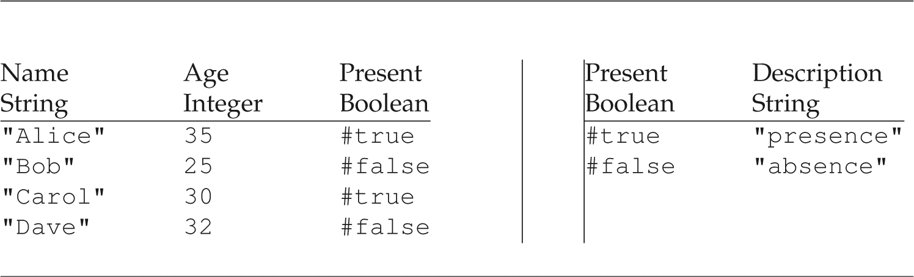
Figure 137: Databases as tables
This section pulls together knowledge from all four parts of the book.
Let’s focus on the table on the left. It has three columns and four rows. Each column comes with a two-part rule:
1. the rule in the left-most column says that the label of the column is “Name” and that every piece of data in this column is a String;
2. the middle column is labeled “Age” and contains Integers; and
3. the label of the right-most one is “Present”; its values are Boolean.
Stop! Explain the table on the right in the same way.
Computer scientists think of these tables as relations. The schema introduces terminology to refer to columns of a relation and to individual cells in a row. Each row relates a fixed number of values; the collection of all rows makes up the entire relation. In this terminology, the first row of the left table in figure 137 relates "Alice" to 35 and #true. Furthermore, the first cell of a row is called the “Name” cell, the second the “Age” cell, and the third one the “Present” cell.
In this section, we represent databases via structures and lists:
(define-struct db [schema content])
; A DB is a structure: (make-db Schema Content)
; A Schema is a [List-of Spec]
; A Spec is a [List Label Predicate]
; A Label is a String
; A Predicate is a [Any -> Boolean]
; A (piece of) Content is a [List-of Row]
; A Row is a [List-of Cell]
; A Cell is Any
; constraint cells do not contain functions
; integrity constraint In (make-db sch con),
; for every row in con,
; (I1) its length is the same as sch's, and
; (I2) its ith Cell satisfies the ith Predicate in sch
Stop! Translate the databases from figure 137 into the chosen data representation. Note that the content of the tables already uses ISL+ data.
Figure 138 shows how to represent the two tables in DBs. Its left-hand side represents the schema, the content, and the database from the left-hand side table in figure 137; its right part corresponds to the right-hand side table. For succinctness, the examples use the quasiquote and unquote notation. Recall that it allows the inclusion of a value such as boolean? in an otherwise quoted list. If you feel uncomfortable with this notation, reformulate these examples with list.
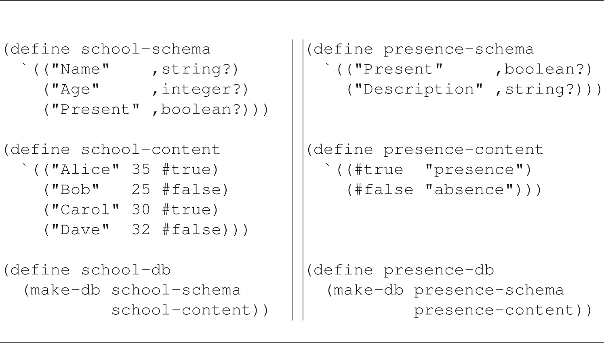
Figure 138: Databases as ISL+ data
Exercise 403. A Spec combines a Label and a Predicate into a list. While acceptable, this choice violates our guideline of using a structure type for a fixed number of pieces of information.
Here is an alternative data representation:
(define-struct spec [label predicate])
; Spec is a structure: (make-spec Label Predicate)
Use this alternative definition to represent the databases from figure 137. 
Integrity Checking The use of databases critically relies on their integrity. Here “integrity” refers to the constraints (I1) and (I2) from the data definition. Checking database integrity is clearly a task for a function:
; DB -> Boolean
; do all rows in db satisfy (I1) and (I2)
(check-expect (integrity-check school-db) #true)
(check-expect (integrity-check presence-db) #true)
(define (integrity-check db)
#false)
The wording of the two constraints suggests that some function has to produce #true for every row in the content of the given database. Expressing this idea in code calls for a use of andmap on the content of db:
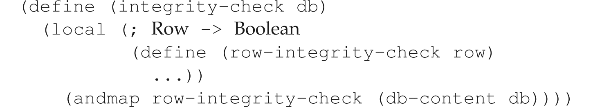
Following the design recipe for the use of existing abstractions, the template introduces the auxiliary function via a local definition.
The design of row-integrity-check starts from this:
; Row -> Boolean
; does row satisfy (I1) and (I2)
(define (row-integrity-check row)
#false)
As always, the goal of formulating a purpose statement is to understand the problem. Here it says that the function checks two conditions. When two tasks are involved, our design guidelines call for functions and the combination of their results:
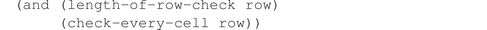
Add these functions to your wish list; their names convey their purpose.
Before we design these functions, we must contemplate whether we can compose existing primitive operations to compute the desired value. For example, we know that (length row) counts how many cells are in row. Pushing a bit more in this direction, we clearly want
(= (length row) (length (db-schema db)))
This condition checks that the length of row is equal to that of db’s schema.
Similarly, check-every-cell calls for checking that some function produces #true for every cell in the row. Once again, it looks like andmap might be called for:
(andmap cell-integrity-check row)
The purpose of cell-integrity-check is obviously to check constraint (I2), that is,
whether “the ith Cell satisfies the ith Predicate in db’s schema.”
And now we are stuck because this purpose statement refers to the relative position of the given cell in row. The point of andmap is, however, to apply cell-integrity-check to every cell uniformly.
When you are stuck, you must work through examples. For auxiliary or local functions, it’s best to derive these examples from the ones for the main function. The first example for integrity-check asserts that school-content satisfies the integrity constraints. Clearly all rows in school-content have the same length as school-schema. The question is why a row such as
(list "Alice" 35 #true)
satisfies the predicates in the corresponding schema:
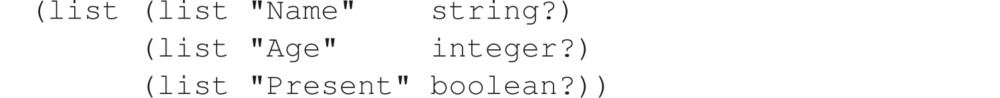
The answer is that all three applications of the three predicates to the respective cells yields true:
> (string? "Alice")
#true
> (integer? 35)
#true
> (boolean? #true)
#true
From here, it is just a short step to see that the function must process these two lists—db’s schema and the given row—in parallel.
Exercise 404. Design the function andmap2. It consumes a function f from two values to Boolean and two equally long lists. Its result is also a Boolean. Specifically, it applies f to pairs of corresponding values from the two lists, and if f always produces #true, andmap2 produces #true, too. Otherwise, andmap2 produces #false. In short, andmap2 is like andmap but for two lists.
Stop! Solve exercise 404 before reading on.
If we had andmap2 in ISL+, checking the second condition on row would be straightforward:
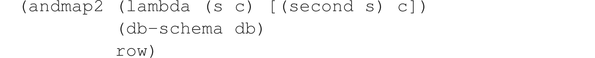
The given function consumes a Spec s from db’s schema, extracts the predicate in the second position, and applies it to the given Cell c. Whatever the predicate returns is the result of the lambda function.
Stop again! Explain [(second s) c].
As it turns out, andmap in ISL+ is already like andmap2:
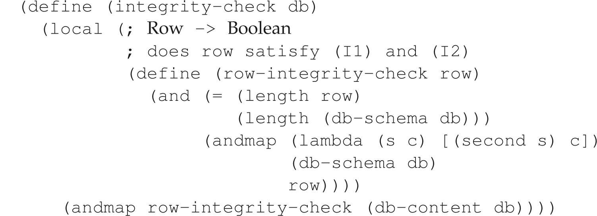
Stop a last time! Develop a test for which integrity-check must fail.
Note on Expression Hoisting Our definition of integrity-check suffers from several problems, some visible, some invisible. Clearly, the function extracts db’s schema twice. With the existing local definition it is possible to introduce a definition and avoid this duplication:
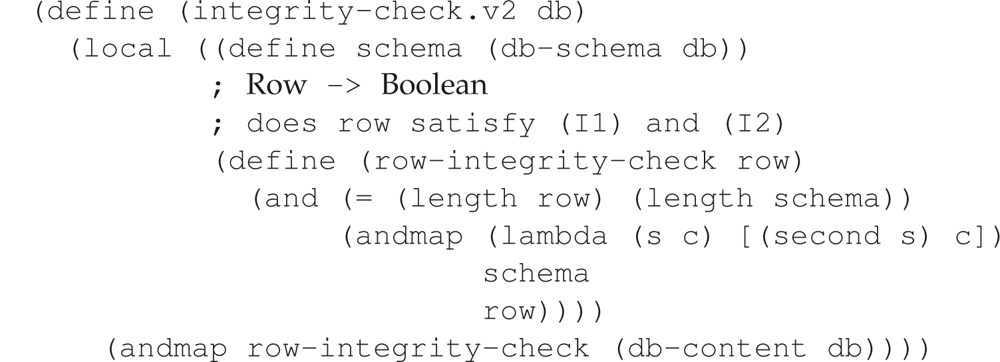
We know from chapter 16.2 that lifting such an expression may shorten the time needed to run the integrity check. Like the definition of inf in figure 100, the original version of integrity-check extracts the schema from db for every single row, even though it obviously stays the same.
Terminology Computer scientists speak of “hoisting an expression.” In a similar vein, the row-integrity-check function determines the length of db’s schema every single time it is called. The result is always the same. Hence, if we are interested in improving the performance of this function, we can use a local definition to name the width of the database content once and for all. Figure 139 displays the result of hoisting (length schema) out of the row-integrity-check. For readability, this final definition also names the content field of db. End
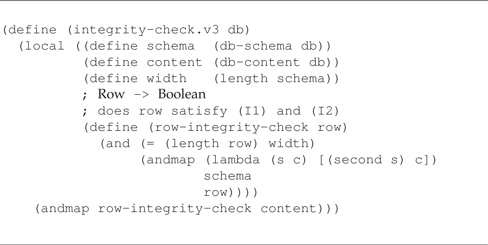
Figure 139: The result of systematic expression hoisting
Projections and Selections Programs need to extract data from databases. One kind of extraction is to select content, which is explained in chapter 12.2. The other kind of extraction produces a reduced database; it is dubbed projection. More specifically, a projection constructs a database by retaining only certain columns from a given database.
The description of a projection suggests the following:
; DB [List-of Label] -> DB
; retains a column from db if its label is in labels
(define (project db labels) (make-db '() '()))
Given the complexity of a projection, it is best to work through an example first. Say we wish to eliminate the age column from the database on the left in figure 137. Here is what this transformation looks like in terms of tables:
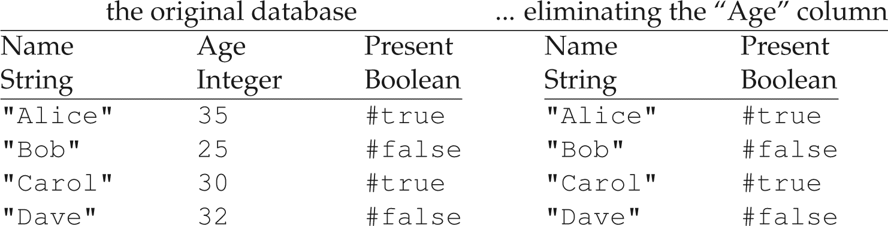
A natural way to articulate the example as a test reuses figure 138:
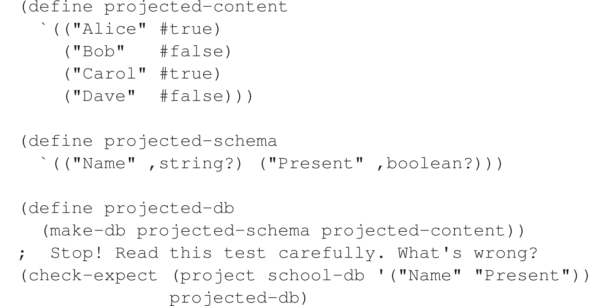
If you run the above code in DrRacket, you get the error message
first argument of equality cannot be a function
before DrRacket can even figure out whether the test succeeds. Recall from chapter 14.4 that functions are infinitely large objects and it is impossible to ensure that two functions always produce the same result when applied to the same arguments. We therefore weaken the test case:
(check-expect
(db-content (project school-db '("Name" "Present")))
projected-content)
For the template, we again reuse existing abstractions; see figure 140. The local expression defines two functions: one for use with filter for narrowing down the schema of the given database and the other for use with map for thinning out the content. In addition, the function again extracts and names the schema and the content from the given database.
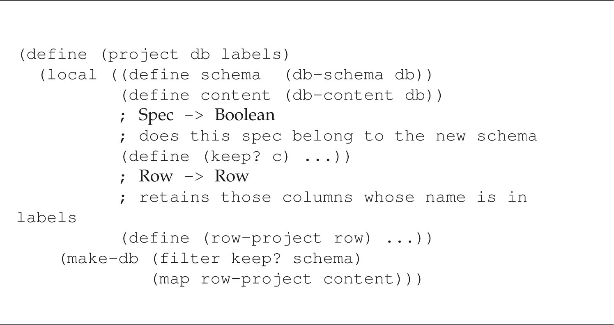
Figure 140: A template for project
Before we turn to the wish list, let’s step back and study the decision to go with two reuses of existing abstraction. The signature tells us that the function consumes a structure and produces an element of DB, so
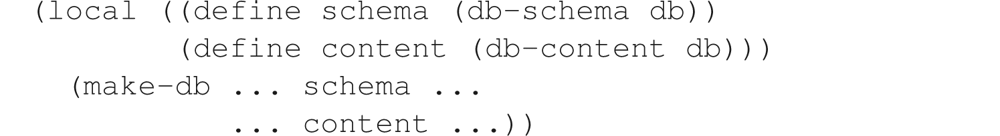
is clearly called for. It is also straightforward to see that the new schema is created from the old schema and the new content from the old content. Furthermore, the purpose statement of project calls for the retention of only those labels that are mentioned in the second argument. Hence, the filter function correctly narrows down the given schema. In contrast, the rows per se stay except that each of them loses some cells. Thus, map is the proper way of processing content.
Now we can turn to the design of the two auxiliary functions. The design of keep? is straightforward. Here is the complete definition:
; Spec -> Boolean
; does this spec belong to the new schema
(define (keep? c)
(member? (first c) labels))
The function is applied to a Spec, which combines a Label and a Predicate in a list. If the former belongs to labels, the given Spec is kept.
For the design of row-project, the goal is to keep those Cells in each Row of content whose name is a member of the given labels. Let’s work through the above example. The four rows are:
(list "Alice" 35 #true)
(list "Bob" 25 #false)
(list "Carol" 30 #true)
(list "Dave" 32 #false)
Each of these rows is as long as school-schema:
(list "Name" "Age" "Present")
The names in the schema determine the names of the cells in the given rows. Hence, row-project must keep the first and third cell of each row because it is their names that are in the given labels.
Since Row is defined recursively, this matching process between the content of the Cells and their names calls for a recursive helper function that row-project can apply to the content and the labels of the cells. Let’s specify it as a wish:
; Row [List-of Label] -> Row
; retains those cells whose corresponding element
; in names is also in labels
(define (row-filter row names) '())
Using this wish, row-project is a one-liner:
(define (row-project row)
(row-filter row (map first schema)))
The map expression extracts the names of the cells, and those names are handed to row-filter to extract the matching cells.
Exercise 405. Design the function row-filter. Construct examples for row-filter from the examples for project.
Assumption The given database passes an integrity check, meaning each row is as long as the schema and thus its list of names.
Figure 141 puts all the pieces together. The function project has the suffix .v1 because it calls for some improvement. The following exercises ask you to implement some of those.
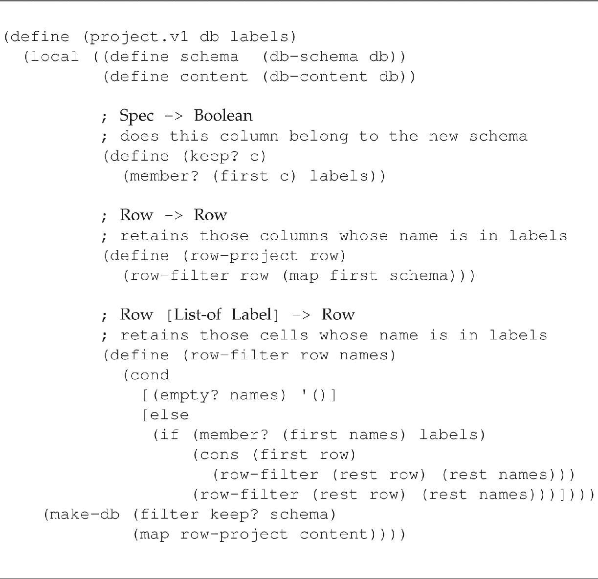
Figure 141: Database projection
Exercise 406. The row-project function recomputes the labels for every row of the database’s content. Does the result differ from function call to function call? If not, hoist the expression.
Exercise 407. Redesign row-filter using foldr. Once you have done so, you may merge row-project and row-filter into a single function. Hint The foldr function in ISL+ may consume two lists and process them in parallel.
The final observation is that row-project checks the membership of a label in labels for every single cell. For the cells of the same column in different rows, the result is going to be the same. Hence it also makes sense to hoist this computation out of the function.
This form of hoisting is somewhat more difficult than plain expression hoisting. We basically wish to pre-compute the result of
(member? label labels)
for all rows and pass the results into the function instead of the list of labels. That is, we replace the list of labels with a list of Booleans that indicate whether the cell in the corresponding position is to be kept. Fortunately, computing those Booleans is just another application of keep? on the schema:
(map keep? schema)
Instead of keeping some Specs from the given schema and throwing away the others, this expression just collects the decisions.
Figure 142 shows the final version of project and integrates the solutions for the preceding exercises. It also uses local to extract and name schema and content, plus keep? for checking whether the label in some Spec is worth keeping. The remaining two definitions introduce mask, which stands for the list of Booleans discussed above, and the revised version of row-project. The latter uses foldr to process the given row and mask in parallel.
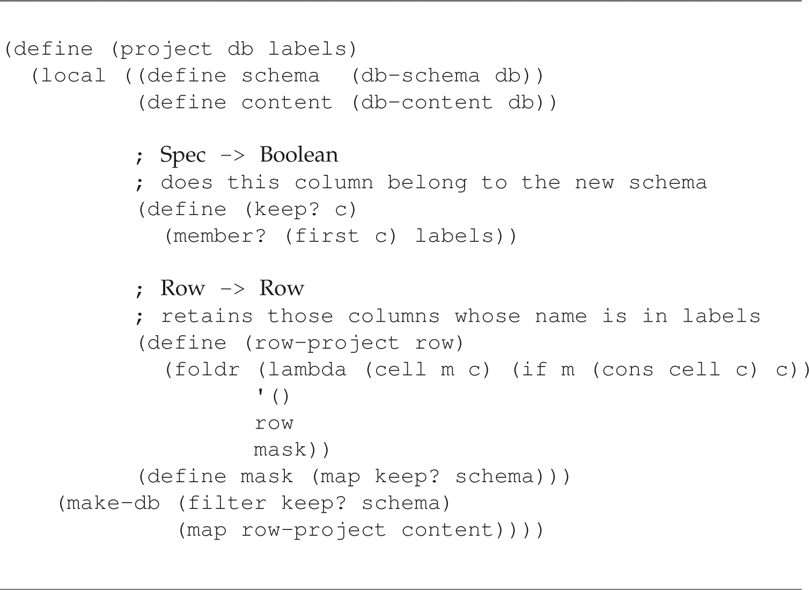
Figure 142: Database projection
Compare this revised definition of project with project.v1 in figure 141. The final definition is both simpler and faster than the original version. Systematic design combined with careful revisions pays off; test suites ensure that revisions don’t mess up the functionality of the program.
Exercise 408. Design the function select. It consumes a database, a list of labels, and a predicate on rows. The result is a list of rows that satisfy the given predicate, projected down to the given set of labels.
Exercise 409. Design reorder. The function consumes a database db and list lol of Labels. It produces a database like db but with its columns reordered according to lol. Hint Read up on ist-ref.
At first assume that lol consists exactly of the labels of db’s columns. Once you have completed the design, study what has to be changed if lol contains fewer labels than there are columns and strings that are not labels of a column in db.
Exercise 410. Design the function db-union, which consumes two databases with the exact same schema and produces a new database with this schema and the joint content of both. The function must eliminate rows with the exact same content.
Assume that the schemas agree on the predicates for each column.
Exercise 411. Design join, a function that consumes two databases: db-1 and db-2. The schema of db-2 starts with the exact same Spec that the schema of db-1 ends in. The function creates a database from db-1 by replacing the last cell in each row with the translation of the cell in db-2.
Here is an example. Take the databases in figure 137. The two satisfy the assumption of these exercises, that is, the last Spec in the schema of the first is equal to the first Spec of the second. Hence it is possible to join them:
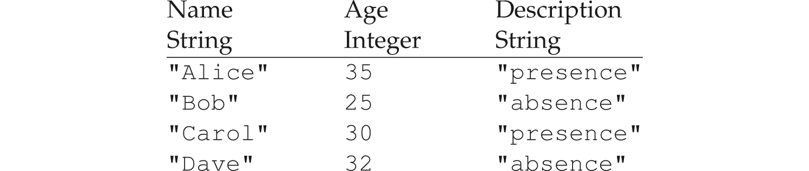
Its translation maps #true to "presence" and #false to "absence".
Hints (1) In general, the second database may “translate” a cell to a row of values, not just one value. Modify the example by adding additional terms to the row for "presence" and "absence".
(2) It may also “translate” a cell to several rows, in which case the process adds several rows to the new database. Here is a second example, a slightly different pair of databases from those in figure 137:
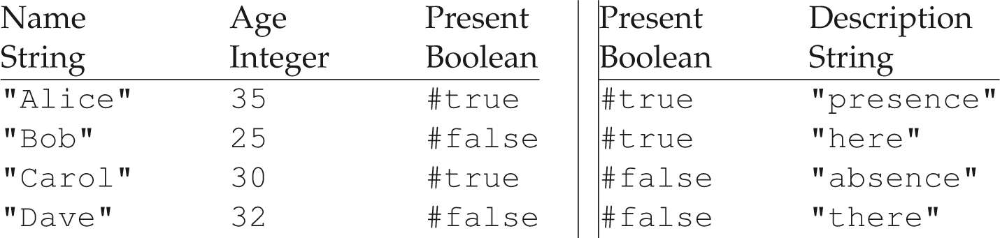
Joining the left database with the one on the right yields a database with eight rows:
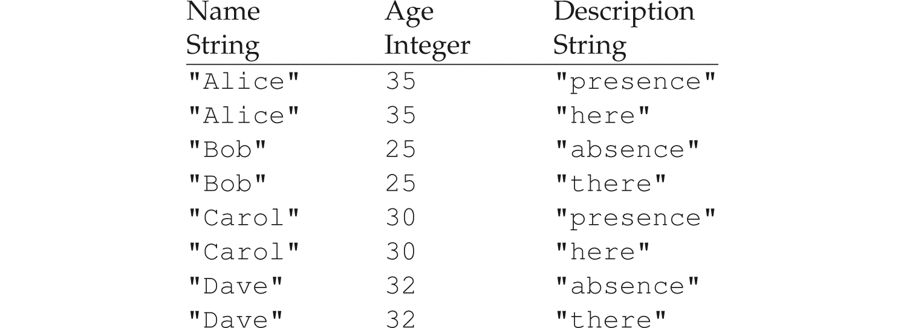
(3) Use iterative refinement to solve the problem. For the first iteration, assume that a “translation” finds only one row per cell. For the second one, drop the assumption.
Note on Assumptions This exercise and the entire section mostly rely on informally stated assumptions about the given databases. Here, the design of join assumes that “the schema of db-2 starts with the exact same Spec that the schema of db-1 ends in.” In reality, database functions must be checked functions in the spirit of chapter 6.3. Designing checked-join would be impossible for you, however. A comparison of the last Spec in the schema of db-1 with the first one in db-2 calls for a comparison of functions. For practical solutions, see a text on databases.